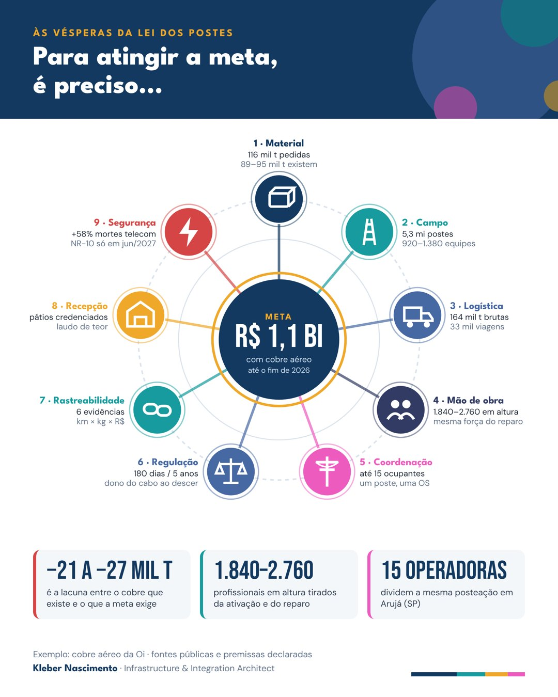

O substitutivo do PL 3220/2019 foi aprovado na Câmara em 4 de novembro e voltou ao Senado. São 53 milhões de postes e 19 mil empresas de telecom sobre eles, só 4 mil com contrato. A retirada de cabos vai virar calendário nacional, e parte do que vai descer é cobre: tem dono, peso, preço e destino.
Usando o caso público do cobre aéreo da Oi, o estudo mostra o que uma meta de R$ 1,1 bilhão exige do campo, em nove ramos, com fontes públicas e premissas declaradas.
de cobre necessárias para R$ 1,1 bi a R$ 9,50/kg. O laudo aponta 109 mil t, e restam de 89 a 95 mil após furto e retiradas.
de postes a intervir. Para concluir em um ano, de 920 a 1.380 equipes trabalhando ao mesmo tempo.
operadoras com acessos ativos dividindo a mesma posteação em Arujá (SP). Uma OS por poste, não seis visitas.
Cada ramo parte da mesma frase e termina num número que precisa fechar. Os números de material vêm do laudo de 2023 e dos contratos noticiados em 2026. Os de campo e logística são estimativas com premissas declaradas, a partir da prática de rede externa.

116 mil t pedidas a R$ 9,50/kg; 89 a 95 mil t disponíveis. Mesmo retirando 100%, o teto é R$ 0,85 a 0,90 bi.
5,3 milhões de postes, 30 a 45 minutos cada. Para concluir em um ano: 920 a 1.380 equipes simultâneas.
164 mil toneladas brutas, 33 mil viagens de coleta e 6,6 mil carretas até o processamento.
De 1.840 a 2.760 profissionais em altura, tirados da mesma força que ativa e repara fibra.
Até 15 ocupantes na mesma posteação. Uma ordem de serviço por poste, e não seis visitas.
Quem é o dono do cabo quando ele desce, quem retira no prazo e para onde vai o metal.
Seis evidências do poste ao caixa: ordem, foto, balança, nota, certificado e conciliação.
Pátios, processadores e fundições credenciados por região, com laudo de teor.
+58% de mortes de trabalhadores de telecom por choque em 2025. A nova NR-10 só vale em junho de 2027.
O estudo completo traz as contas, as premissas, as 15 figuras e todas as fontes.
Conversas sobre rastreabilidade de ativos, integração pós-aquisição e operação de campo em telecom.